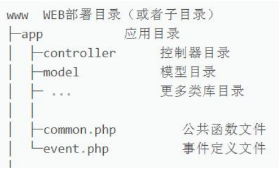
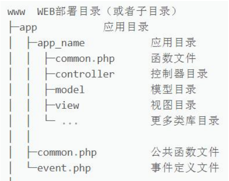
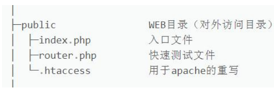
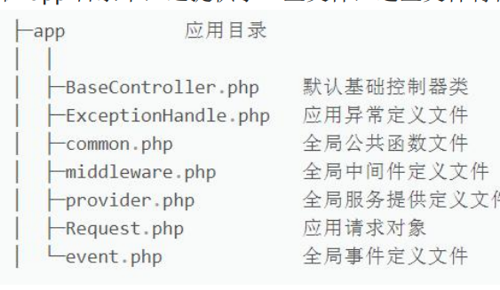
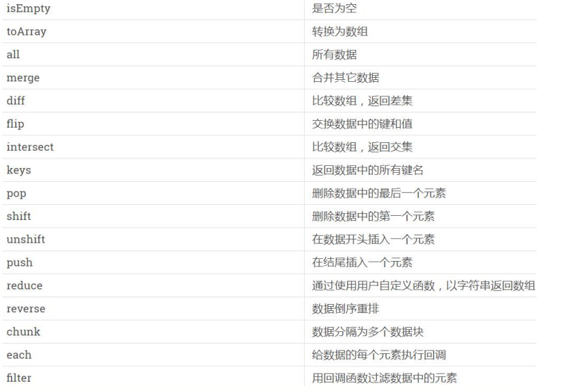
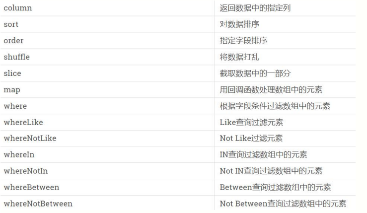

ThinkPHP6.0 遵循的是 PSR-2 的命名规范和 PSR-4 的自动加载；
目录和文件的规范如下：
a. 目录名（小写+下划线）；
b. 类库和函数文件统一以.php 为后缀；
c. 类的文件名均以命名空间定义，并且命名空间的路径和类库文件所在路径一致；
d. 类（包含接口和 Trait）文件采用驼峰式命名（首字母大写），其它采用小写+下划线命名；
e. 类名（包括接口和 Trait）和文件名保持一致，统一采用驼峰式命名（首字母大写）；
函数和类、属性命名规范如下：
a. 类的命名采用驼峰法（首字母大写），如：User、UserType；
b. 函数的命名使用小写字母和下划线（小写字母开头）的方式，如：get_client_ip；
c. 方法的命名使用驼峰法（首字母小写），如：getUserName；
d. 属性的命名使用驼峰法（首字母小写），如：tableName；
e. 特例：以双下划线打头的函数或方法作为魔术方法，如：call 和 __autoload；
常量与配置的规范如下：
a. 常量以大写字母和下划线命名，如：APP_PATH；
b. 配置参数以小写字母和下划线命名，如：url_convert；
c. 环境变量定义使用大写字母和下划线命名，如：APP_DEBUG；
数据表和字段的规范如下：
a. 数据表和字段采用小写加下划线方式命名；
b. 并注意字段名不要以下划线开头，如： think_user 表和user_name
c. 字段不建议使用驼峰和中文作为数据表及字段命名；
ThinkPHP6.0 支持多应用模式部署，app 是应用目录；
默认情况下，是采用的单模式，如下图结构：

多应用模式下，结构如下图：

上图中，app_name 可以有多个，即多应用模式；
在目录结构上，只确保对外可访问的仅 public 目录；

在 app 目录中，还提供了一些文件，这些文件将在后面逐步讲到

在开发阶段，我们建议开启框架的调试模式；
调试模式开启后，会牺牲一些执行效率，但大大提高了开发排错的能力；
当项目部署到生产环境时，再关闭调试模式即可；
安装好的 TP6.0 默认并没有开启调试，可以在域名后面胡乱输入字符回车；
此时，页面只会提示：“页面错误，请稍后再试~”，表示调试未开启；
通过命令行安装的 TP6.0，会自动在根目录生成一个.example..env 文件；
这个.env 文件是环境配置文件，我们只要删除前面的.example.即可生效；
此时，刷新页面，右下角会出现 Trace 调试小图标，说明调试开启了；
查看.env 文件，打开调试的环境变量为 APP_DEBUG = true，false 关闭；
那么，开启调试模式有那些显著的优势呢？
a. 记录系统运行流程的执行过程；
b. 展示错误和调试信息，并开启日志记录；
c. 模版修改可以及时生效(不会被缓存干扰)；
d. 启动右下角的 Trace 调试功能，更加强大；
e. 发生异常时，也会显示异常信息；
当然，还有一种模式，就是关闭调试的时候，也可以显示简要的错误信息；
首先，关闭调试模式：APP_DEBUG = false；
然后，根目录下 config 的 app.php 最后一样设置为： show_error_msg' => true
.env环境变量用于本地开发测试，部署后会被忽略；use think\facade\Env; return Env::get('database.hostname');use think\facade\Config; return Config::get('database.connections.mysql.hostname');echo Env::has('database.hostname'); echo Config::has('database.connections.mysql.hostname');ThinkPHP 框架非常多的操作都是通过 URL 来实现的；
多应用：http://serverName/index.php/应用/控制器/操作/参数/值…；
单应用：http://serverName/index.php/控制器/操作/参数/值…；
由于 TP6.0 默认是单应用模式，多应用需要作为扩展安装，避免混乱暂时搁置；
http://serverName 是域名地址，比如 127.0.0.1:8000 或localhost/tp6/
index.php 这个文件，是根目录下 public/下的 index.php(入口文件)；
控制器：app 目录下有一个 controller 控制器目录的 Test.php(控制器)；
Test.php 控制器的类名也必须是 class Test，否则错误；
操作就是控制器类里面的方法，比如：index(默认免写)或hello(必写)；
那么完整形式为：
xxxxxxxxxx71a. 域名访问2http://localhost/tp6/public/index.php/test/hello/value/world3http://localhost/路径/控制器/类名/操作数（方法名）/值（实参）4b.IP地址访问6http://127.0.0.1:8000/index.php/test/hello/value/world7http://127.0.0.1:8000/控制器/类名/操作数（方法名）/值（实参）
xxxxxxxxxx71class Test { 2 public function index() {3 return 'test'; 4 } 5 public function hello($value = '') {6 return 'hello '.$value; } 7}
public/index.php 中的 index.php 可以省略，只要设置URL 重写即可；
httpd.conf 配置文件中加载了 mod_rewrite.so 模块；
AllowOverride None 将 None 改为 All；
此时，路径变更为： http://localhost/tp6/public/test/hello/value/world
'controller_layer' => 'controller123'namespace app\controller; class Test {...}http://localhost/tp6/public/test/ http://localhost/tp6/public/test/hellohttp://localhost/tp6test3/public/helloworld http://localhost/tp6test3/public/hello_world'controller_suffix' => trueThinkPHP 直接采用方法内 return 返回的方式直接就输出了；
TP不支持直接输出数组，可以使用 json 输出，直接采用 json 函数； $data = array('a'=>1, 'b'=>2, 'c'=>3); return json($data)
xxxxxxxxxx41 public function arrayOutput(){2 $arr = ['a', 'b', 'c', 'd', 'e'];3 return json_encode($arr);4 }不推荐使用 die、exit 等 PHP 方法中断代码执行，推荐助手函数halt()；halt('中断测试');
一般来说，创建控制器后，推荐继承基础控制器来获得更多的方法；
基础控制器仅仅提供了控制器验证功能，并注入了think\App和think\Request；
这两个对象后面会有章节详细讲解，下面我们继承并简单使用一下；
xxxxxxxxxx91namespace app\controller; 2use app\BaseController; 3
4class Test extends BaseController { 5 public function index() { 6 //返回实际路径 return $this->app->getBasePath(); 7 //返回当前方法名 return $this->request->action(); 8 } 9} 在单应用模式下，我们可以给项目定义一个 Error 控制器类，来提醒错误（相当于自定义404页面 或其他错误）；
xxxxxxxxxx51class Error { 2 public function index() { 3 return '当前控制器不存在！'; 4 } 5} 所谓多级控制器，就是在控制器 controller 目录下再建立目录并创建控制器；
我们在 controller 目录下建立 group 目录，并创建 Blog.php 控制器；
而此时，我们需要访问的地址为：http://localhost:8000/group.blog
xxxxxxxxxx81class Blog { 2 public function index() { 3 return 'index'; 4 } 5 public function read() { 6 return 'read'; 7 } 8}ThinkPHP 采用内置抽象层将不同的数据库操作进行封装处理；
数据抽象层基于 PDO 模式，无须针对不同的数据库编写相应的代码；
使用数据库的第一步，就是连接你的数据库；
在根目录的 config 下的 database.php 可以设置数据库连接信息；
大部分系统已经给了默认值，你只需要修改和填写需要的值即可；
本地测试，会优先采用.env 的配置信息，我们和 database 配置对应上即可；
xxxxxxxxxx81'type' => Env::get('database.type', 'mysql'), 2'hostname' => Env::get('database.hostname', '127.0.0.1'),3'database' => Env::get('database.database', 'grade'), 4'username' => Env::get('database.username', 'root'), 5'password' => Env::get('database.password', '123456'),6'hostport' => Env::get('database.hostport', '3306'), 7'charset' => Env::get('database.charset', 'utf8'), 8'prefix' => Env::get('database.prefix', 'tp_'), 可以通过删除改变.env 的配置，或删除.env 来验证 database 的执行优先级；
在 database.php 配置中，default 表示设置默认的数据库连接；
connections 配置数据库连接信息，可以是多个数据库，便于切换；
默认的数据库连接名称为：'mysql'，再复制一组数据库链接信息：'demo'切换；
创建一个用于测试数据连接的控制器：DataTest.php；
xxxxxxxxxx131namespace app\controller; 2use think\facade\Db; 3
4class DataTest { 5 public function index() { 6 $user = Db::table('tp_user')->select(); 7 //$user = Db::connect('mysql')->table('tp_user')->select();return json($user); 8 } 9 10 public function demo() { 11 $demo = Db::connect('demo')->table('tp_user')->select();return json($demo); 12 } 13} 暂时不必理解这里的代码，只要运行起来看到效果即可，后面章节会详解；
在 app 目录下创建一个 model 目录，并创建 User.php 的模型类；
xxxxxxxxxx51namespace app\model; 2use think\Model; 3class User extends Model { 4 protected $connection = 'demo'; 5} User 继承模型基类，即可实现数据调用，后面章节会详解讲解；
而受保护的字段$connection，则是切换到 demo 数据库；
控制器端的调用方式如下，具体原理，后面模型章节会详解；
xxxxxxxxxx41public function getUser() { 2 $user = User::select(); 3 return json($user); 4}Db::table('tp_user')->where('id', 27)->find()SELECT * FROMtp_userLIMIT 1Db::table('tp_user')->where('id', 1)->findOrFail()Db::table('tp_user')->where('id', 1)->findOrEmpty();Db::table('tp_user')->select(); SELECT * FROMtp_user` Db::table('tp_user')->where('id', 1)->selectOrFail();$user = Db::table('tp_user')->select()->toArray(); dump($user);Db::name('user')->select();通过 value()方法，可以查询指定字段的值（单个），没有数据返回null；Db::name('user')->where('id', 27)->value('username');
通过 colunm()方法，可以查询指定列的值（多个），没有数据返回空数组；Db::name('user')->column('username');
可以指定 id 作为列值的索引；Db::name('user')->column('username', 'id');
如果处理的数据量巨大，成百上千那种，一次性读取有可能会导致内存开销过大；
为了避免内存处理太多数据出错，可以使用 chunk()方法分批处理数据；
比如，每次只处理 100 条，处理完毕后，再读取 100 条继续处理；
xxxxxxxxxx51Db::table('tp_user')->chunk(3, function($users) { 2 foreach ($users as $user) { 3 dump($user); } 4 echo 1; 5});
可以利用游标查询功能，可以大幅度减少海量数据的内存开销，它利用了PHP生成器特性。每次查询只读一行，然后再读取时，自动定位到下一行继续读取；
xxxxxxxxxx11$cursor = Db::table('tp_user')->cursor(); foreach($cursor as $user){ dump($user); }前面课程中我们通过指向符号“->”多次连续调用方法称为：链式查询；
当 Db::name('user')时，返回查询对象(Query)，即可连缀数据库对应的方法；
而每次执行一个数据库查询方法时，比如 where()，还将返回查询对象(Query)；
只要还是数据库对象，那么就可以一直使用指向符号进行链式查询；
再利用 find()、select()等方法返回数组(Array)或数据集对象(Colletion)；
而 find()和 select()是结果查询方法（放在最后），并不是链式查询方法；
xxxxxxxxxx11Db::name('user')->where('id', 27)->order('id', 'desc')->find()除了查询方法可以使用链式连贯操作，CURD 操作也可以使用（后续课程研究）；
那么，有多少种类似 where()的链式操作方法呢？打开手册瞄一下。。。
如果多次使用数据库查询，那么每次静态创建都会生成一个实例，造成浪费；
我们可以把对象实例保存下来，再进行反复调用即可；
xxxxxxxxxx31$userQuery = Db::name('user'); 2$dataFind = $userQuery->where('id', 27)->find(); 3$dataSelect = $userQuery->select(); 当同一个对象实例第二次查询后，会保留第一次查询的值；
xxxxxxxxxx41$data1 = $userQuery->order('id', 'desc')->select(); 2$data2 = $userQuery->select(); 3return Db::getLastSql(); 4SELECT * FROM `tp_user` ORDER BY `id` DESC 通过示例对象做多次查询时，会将上次查询的SQL语句保存到该示例对象中，此时我们在二次查询之前需要使用removeOption()清空SQL语句
xxxxxxxxxx11$userQuery->removeOption('where')->select();
使用 insert()方法可以向数据表添加一条数据，更多的字段采用默认；
xxxxxxxxxx21$data = [ 'username' => '辉夜', 'password' => '123', 'gender' => '女', 'email' => 'huiye@163.com', 'price' => 90, 'details' => '123' ]; 2Db::name('user')->insert($data); 如果新增成功，insert()方法会返回一个 1 值；
xxxxxxxxxx11 return Db::name('user')->insert($data); 如果你添加一个不存在的字段数据，会抛出一个异常 Exception；
如果想强行新增抛弃不存在的字段数据，则使用 strick(false)方法，忽略异常；
xxxxxxxxxx11Db::name('user')->strict(false)->insert($data); 如果我们采用的数据库是 mysql，可以支持 replace 写入；
insert 和 replace 写入的区别，前者表示表中存在主键相同则报错，后者则修改；
xxxxxxxxxx11Db::name('user')->replace()->insert($data); return Db::getLastSql(); 使用 insertGetId()方法，可以在新增成功后返回当前数据ID；
xxxxxxxxxx11return Db::name('user')->insertGetId($data);使用 insertAll()方法，可以批量新增数据，但要保持数组结构一致；
xxxxxxxxxx211$datas = [2 [3 'username' => '卡莉斯塔',4 'password' => '123',5 'gender' => '女',6 'email' => 'kalisita@163.com',7 'price' => 90,8 'details' => '123'9 ],10 [11 'username' => '凯尔',12 'password' => '123',13 'gender' => '女',14 'email' => 'kaier@163.com',15 'price' => 90,16 'details' => '123'17 ]18 ];19
20$query = Db::name('user');21return $query->insertAll($datas);save()方法是一个通用方法，可以自行判断是新增还是修改(更新)数据；
save()方法判断是否为新增或修改的依据为，是否存在主键，不存在即新增；
xxxxxxxxxx11Db::name('user')->save($data);使用 update()方法来修改数据，修改成功返回影响行数，没有修改返回0；
xxxxxxxxxx21$data = [ 'username' => '李白' ]; 2return Db::name('user')->where('id', 38)->update($data); 如果修改数据包含了主键信息，比如 id，那么可以省略掉where 条件；
xxxxxxxxxx21$data = [ 'id' => 231, 'username' => '李白' ]; 2return Db::name('user')->update($data); 如果想让一些字段修改时执行 SQL 函数操作，可以使用 exp()方法实现；
xxxxxxxxxx11Db::name('user')->where('id', 232) ->exp('email', 'UPPER(email)') ->update(); 如果要自增/自减某个字段，可以使用 inc/dec 方法，并支持自定义步长；
xxxxxxxxxx11Db::name('user')->where('id', 232) ->inc('price') ->dec('status', 2) ->update(); 一个更加简单粗暴灵活的方式，使用::raw()方法实现 3，4 点的内容；
xxxxxxxxxx51Db::name('user')->where('id', 232) ->update([ 2 'email' => Db::raw('UPPER(email)'),3 'price' => Db::raw('price + 1'),4 'status' => Db::raw('status - 2')5]);
使用 save()方法进行修改数据，这里必须指定主键才能实现修改功能；
xxxxxxxxxx11Db::name('user')->where('id', 232) ->save(['username'=>'李黑']); 极简删除可以根据主键直接删除，删除成功返回影响行数，否则0；
xxxxxxxxxx11Db::name('user')->delete(51); 根据主键，还可以删除多条记录；
xxxxxxxxxx11 Db::name('user')->delete([48,49,50]); 正常情况下，通过 where()方法来删除；
xxxxxxxxxx11Db::name('user')->where('id', 47)->delete(); 通过 true 参数删除数据表所有数据，我还没测试，大家自行测试下；
xxxxxxxxxx11Db::name('user')->delete(true);
查询表达式支持大部分常用的 SQL 语句，语法格式如下： where('字段名','查询表达式','查询条件');
在查询数据进行筛选时，我们采用 where()方法，比如 id=80；
xxxxxxxxxx11Db::name('user')->where('id', 80)->find(); Db::name('user')->where('id','=',80)->find(); 使用<>、>、<、>=、<=可以筛选出各种符合比较值的数据列表；
xxxxxxxxxx11Db::name('user')->where('id','<>',80)->select(); 使用 like 表达式进行模糊查询；
xxxxxxxxxx11Db::name('user')->where('email','like','xiao%')->select(); like 表达式还可以支持数组传递进行模糊查询；
xxxxxxxxxx21Db::name('user')->where('email','like',['xiao%','wu%'], 'or')->select(); 2SELECT * FROM `tp_user` WHERE (`email` LIKE 'xiao%' OR `email` LIKE 'wu%') like 表达式具有两个快捷方式 whereLike()和 whereNoLike()；
xxxxxxxxxx21Db::name('user')->whereLike('email','xiao%')->select(); 2Db::name('user')->whereNotLike('email','xiao%')->select(); between 表达式具有两个快捷方式 whereBetween()和 whereNotBetween()；
xxxxxxxxxx41Db::name('user')->where('id','between','19,25')->select(); 2Db::name('user')->where('id','between',[19, 25])->select(); 3Db::name('user')->whereBetween('id','19,25')->select(); 4Db::name('user')->whereNotBetween('id','19,25')->select(); in 表达式具有两个快捷方式 whereIn()和 whereNotIn()；
xxxxxxxxxx41Db::name('user')->where('id','in', '19,21,29')->select(); 2Db::name('user')->where('id','in', [19, 21, 29])->select(); 3Db::name('user')->whereIn('id','19,21,29')->select(); 4Db::name('user')->whereNotIn('id','19,21,29')->select(); null 表达式具有两个快捷方式 whereNull()和 whereNotNull()；
xxxxxxxxxx41Db::name('user')->where('uid','null')->select(); 2Db::name('user')->where('uid','not null')->select(); 3Db::name('user')->whereNull('uid')->select(); 4Db::name('user')->whereNotNull('uid')->select();使用 exp 可以自定义字段后的 SQL 语句；
xxxxxxxxxx21Db::name('user')->where('id','exp','IN (19,21,25)')->select();2Db::name('user')->whereExp('id','IN (19,21,25)')->select();可以使用>、<、>=、<=来筛选匹配时间的数据；
xxxxxxxxxx11Db::name('user')->where('create_time', '>', '2018-1-1')->select(); 可以使用 between 关键字来设置时间的区间；
xxxxxxxxxx11Db::name('user')->where('create_time', 'between', ['2018-1-1', '2019-12-31'])->select(); Db::name('user')->where('create_time', 'not between', ['2018-1-1', '2019-12-31'])->select();时间查询的快捷方法为 whereTime()，直接使用>、<、>=、<=；
xxxxxxxxxx11Db::name('user')->whereTime('create_time', '>', '2018-1-1')->select(); 快捷方式也可以使用 between 和 not between；
xxxxxxxxxx11Db::name('user')->whereBetween('create_time', ['2018-1-1', '2019-12-31'])->select(); 还有一种快捷方式为：whereBetweenTime()和 whereNotBetweenTime()；
xxxxxxxxxx11Db::name('user')->whereBetweenTime('create_time', '2018-1-1', '2019-12-31')->select(); 默认的大于>，可以省略；
xxxxxxxxxx11Db::name('user')->whereTime('create_time', '2018-1-1')->select(); 使用 whereYear 查询今年的数据、去年的数据和某一年的数据
xxxxxxxxxx31Db::name('user')->whereYear('create_time')->select(); 2Db::name('user')->whereYear('create_time', 'last year')->select(); 3Db::name('user')->whereYear('create_time', '2016')->select(); 使用 whereMonth 查询当月的数据、上月的数据和某一个月的数据；
xxxxxxxxxx31Db::name('user')->whereMonth('create_time')->select(); 2Db::name('user')->whereMonth('create_time', 'last month')->select(); 3Db::name('user')->whereMonth('create_time', '2016-6')->select(); 使用 whereDay 查询今天的数据、昨天的数据和某一个天的数据；
xxxxxxxxxx31Db::name('user')->whereDay('create_time')->select(); 2Db::name('user')->whereDay('create_time', 'last day')->select(); 3Db::name('user')->whereDay('create_time', '2016-6-27')->select();
查询指定时间的数据，比如两小时内的；
xxxxxxxxxx11 Db::name('user')->whereTime('create_time', '-2 hours')->select();查询两个时间字段时间有效期的数据，比如会员开始到结束的期间；
xxxxxxxxxx11Db::name('user')->whereBetweenTimeField('start_time', 'end_time')->select();使用 count()方法，可以求出所查询数据的数量；
xxxxxxxxxx11Db::name('user')->count(); count()可设置指定 id，比如有空值(Null)的 uid，不会计算数量；
xxxxxxxxxx11Db::name('user')->count('uid'); 使用 max()方法，求出所查询数据字段的最大值；
xxxxxxxxxx11Db::name('user')->max('price'); 如果 max()方法，求出的值不是数值，则通过第二参数强制转换；
xxxxxxxxxx11Db::name('user')->max('price', false); 使用 min()方法，求出所查询数据字段的最小值，也可以强制转换；
xxxxxxxxxx11Db::name('user')->min('price'); 使用 avg()方法，求出所查询数据字段的平均值；
xxxxxxxxxx11Db::name('user')->avg('price'); 使用 sum()方法，求出所查询数据字段的总和；
xxxxxxxxxx11Db::name('user')->sum('price');使用 fetchSql()方法，可以设置不执行 SQL，而返回 SQL 语句，默认true；
xxxxxxxxxx11Db::name('user')->fetchSql(true)->select(); 使用 buildSql()方法，也是返回 SQL 语句，不需要再执行select()，且有括号；
xxxxxxxxxx11Db::name('user')->buildSql(true); 结合以上方法，我们实现一个子查询；
xxxxxxxxxx21$subQuery = Db::name('two')->field('uid')->where('gender', '男')->buildSql(true); 2$result = Db::name('one')->where('id','exp', 'IN '.$subQuery)->select(); 使用闭包的方式执行子查询；
xxxxxxxxxx31$result = Db::name('one')->where('id', 'in', function ($query) { 2 $query->name('two')->where('gender', '男')->field('uid'); 3})->select();使用 query()方法，进行原生 SQL 查询，适用于读取操作，SQL 错误返回false；
xxxxxxxxxx11Db::query('select * from tp_user'); 使用 execute 方法，进行原生 SQL 更新写入等，SQL 错误返回false；
xxxxxxxxxx11Db::execute('update tp_user set username="孙悟空" where id=29');表达式查询，就是 where()方法的基础查询方式；
xxxxxxxxxx11 Db::name('user')->where('id', '>', 70)->select(); 关联数组查询，通过键值对来数组键值对匹配的查询方式；
xxxxxxxxxx11$user = Db::name('user')->where([ 'gender' => '男', 'price' => 100 //'price' => [60,70,80] ])->select(); 索引数组查询，通过数组里的数组拼装方式来查询；
xxxxxxxxxx11 $user = Db::name('user')->where([ ['gender', '=', '男'], ['price', '=', '100'] ])->select(); 将复杂的数组组装后，通过变量传递，将增加可读性；
xxxxxxxxxx31$map[] = ['gender', '=', '男']; 2$map[] = ['price', 'in', [60, 70, 80]]; 3$user = Db::name('user')->where($map)->select(); 字符串形式传递，简单粗暴的查询方式，whereRaw()支持复杂字符串格式；
xxxxxxxxxx11Db::name('user')->whereRaw('gender="男" AND price IN (60, 70, 80)')->select();如果 SQL 查询采用了预处理模式，比如 id=:id，也能够支持；
xxxxxxxxxx11Db::name('user')->whereRaw('id=:id', ['id'=>19])->select();使用 field()方法，可以指定要查询的字段；
xxxxxxxxxx21Db::name('user')->field('id, username, email')->select(); 2Db::name('user')->field(['id', 'username', 'email'])->select(); 使用 field()方法，给指定的字段设置别名；
xxxxxxxxxx21 Db::name('user')->field('id,username as name')->select(); 2Db::name('user')->field(['id', 'username'=>'name'])->select(); 在 fieldRaw()方法里，可以直接给字段设置 MySQL 函数；
xxxxxxxxxx11Db::name('user')->fieldRaw('id,SUM(price)')->select(); 使用 field(true)的布尔参数，可以显式的查询获取所有字段，而不是*；
xxxxxxxxxx11Db::name('user')->field(true)->select(); 使用 withoutField()方法中字段排除，可以屏蔽掉想要不显示的字段；
xxxxxxxxxx11Db::name('user')->withoutField('details')->select(); 使用 field()方法在新增时，验证字段的合法性；
xxxxxxxxxx11 Db::name('user')->field('username, email, details')->insert($data); 使用 alias()方法，给数据库起一个别名；
xxxxxxxxxx11Db::name('user')->alias('a')->select();使用 limit()方法，限制获取输出数据的个数；
xxxxxxxxxx11Db::name('user')->limit(5)->select(); 分页模式，即传递两个参数，比如从第 3 条开始显示 5 条 limit(2,5)；
xxxxxxxxxx11Db::name('user')->limit(2, 5)->select(); 实现分页，需要严格计算每页显示的条数，然后从第几条开始；
xxxxxxxxxx41//第一页 2Db::name('user')->limit(0, 5)->select(); 3//第二页 4Db::name('user')->limit(5, 5)->select(); page()分页方法，优化了 limit()方法，无须计算分页条数；
xxxxxxxxxx41//第一页 2Db::name('user')->page(1, 5)->select(); 3//第二页 4Db::name('user')->page(2, 5)->select(); 使用 order()方法，可以指定排序方式，没有指定第二参数，默认asc；
xxxxxxxxxx11Db::name('user')->order('id', 'desc')->select(); 支持数组的方式，对多个字段进行排序；
xxxxxxxxxx11Db::name('user')->order('id', 'desc')->select(); 使用 orderRaw()方法，支持排序的时候指定 MySQL 函数；
xxxxxxxxxx11Db::name('user')->orderRaw('FIELD(username,"樱桃小丸子") DESC')->select(); 使用 group()方法，给性别不同的人进行 price 字段的总和统计；
xxxxxxxxxx11Db::name('user')->fieldRaw('gender, SUM(price)') ->group('gender')->select(); 也可以进行多字段分组统计；
xxxxxxxxxx11Db::name('user')->fieldRaw('gender, SUM(price)') ->group('gender,password')->select(); 使用 group()分组之后，再使用 having()进行筛选；
xxxxxxxxxx21$result = Db::name('user') ->fieldRaw('gender, SUM(price)') ->group('gender') 2 ->having('SUM(price)>600') ->select();使用|(OR)或&(AND)来实现 where 条件的高级查询，where 支持多个连缀；
xxxxxxxxxx51$user = Db::name('user') 2 ->where('username|email', 'like', '%xiao%') 3 ->where('price&uid', '>', 0) 4 ->select(); 5//生成的 SQL SELECT * FROM `tp_user` WHERE ( `username` LIKE '%xiao%' OR `email` LIKE '%xiao%' ) AND ( `price` > 0 AND `uid` > 0 ) 关联数组方式，可以在 where 进行多个字段进行查询；
xxxxxxxxxx71$user = Db::name('user')2 ->where([ ['id', '>', 0], 3 ['status', '=', 1], 4 ['price', '>=', 80], 5 ['email', 'like', '%163%'] ])6 ->select(); 7//生成的 SQL SELECT * FROM `tp_user` WHERE `id` > 0 AND `status` = 1 AND `price` >= 80 AND`email` LIKE '%163%' 根据之前的课程中，条件字符串复杂组装，比如使用 exp 了，就使用raw()方法；
xxxxxxxxxx41$user = Db::name('user')->where([ 2 ['status', '=', 1], 3 ['price', 'exp', Db::raw('>80')] ])->select(); 4//生成的 SQL SELECT * FROM `tp_user` WHERE `status` = 1 AND ( `price` >80 ) 如果有多个 where，并且 where 条件是分离的$map，而$map 本身有多个条件；
那么$map 条件如果需要先执行出结果，再和后续条件判断，也就是加上括号；
那么，需要对这个$map 变量，再加上一个中括号处理优先级；
xxxxxxxxxx71$map = [ ['status', '=', 1], 2 ['price', 'exp', Db::raw('>80')] ]; 3$user = Db::name('user') 4 ->where([$map]) 5 ->where('status', '=', '%163.com%')6 ->select(); 7//生成的 SQL SELECT * FROM `tp_user` WHERE ( `status` = 1 AND ( `price` >80 ) ) AND `status`= %163.com% 如果，条件中有多次出现一个字段，并且需要 OR 来左右筛选，可以用whereOr；
xxxxxxxxxx101$map1 = [ 2 ['username', 'like', '%小%'], 3 ['email', 'like', '%163%'] ]; 4$map2 = [ 5 ['username', 'like', '%孙%'], 6 ['email', 'like', '%.com%'] ]; 7$user = Db::name('user') 8 ->whereOr([$map1, $map2])9 ->select(); 10//生成的 SQL SELECT * FROM `tp_user` WHERE ( `username` LIKE '%小%' AND `email` LIKE '%163%' )OR ( `username` LIKE '%孙%' AND `email` LIKE '%.com%' ) 闭包查询可以连缀，会自动加上括号，更清晰，如果是 OR，请用whereOR()；
xxxxxxxxxx31$user = Db::name('user')2 ->where(function ($query) { 3 $query->where('id', '>', 10); })->whereOr(function ($query) { $query->where('username', 'like', '%小%'); })->select(); 对于比较复杂或你不知道如何拼装 SQL 条件，那么就直接使用whereRaw()即可；
xxxxxxxxxx31$user = Db::name('user') 2 ->whereRaw('(username LIKE "%小%" AND email LIKE "%163%") OR (price > 80)')3 ->select(); whereRaw()方式也支持参数绑定操作，具体如下；
xxxxxxxxxx31$user = Db::name('user') 2 ->whereRaw('(username LIKE :username AND email LIKE :email) OR (price > :price)', ['username'=>'%小%', 'email'=>'%163%', 'price'=>80]) 3 ->select();系统封装了很多 where 方法的快捷方式，之前学习了一些，全部如下：
whereColumn()方法，比较两个字段的值，符合的就筛选出来；
xxxxxxxxxx41$user = Db::name('user') 2 ->whereColumn('update_time', '>=', 'create_time') 3 ->select(); 4//相等可以简化，只需要两边的字段 whereColumn('update_time', 'create_time') 系统还针对字段查询提供了几个方便查询的快捷方式；
whereFieldName()方法，查询某个字段的值，注意 FileName 是字段名；
xxxxxxxxxx41Db::name('user')2 ->whereEmail('xiaoxin@163.com')3 ->find(); Db::name('user')->whereUsername('蜡笔小新')4 ->find(); //如果字段是 create_time，则 whereCreateTime，驼峰式写法； getByFieldName()方法，查询某个字段的值，注意只能查询一条，不需要find()；
xxxxxxxxxx11Db::name('user')->getByEmail('xiaoxin@163.com'); getFieldByFieldName()方法，通过查询得到某个指定字段的单一值；
xxxxxxxxxx11Db::name('user')->getFieldByEmail('xiaoxin@163.com', 'username'); when()可以通过条件判断，执行闭包里的分支查询； 当when里面的布尔值为True时，走第一条分支函数，否则走第二条分支函数。可玩性很高
xxxxxxxxxx31$user = Db::name('user')2 ->when(false, function ($query) { $query->where('id', '>', 0); }, 3 function ($query) { $query->where('username', 'like', '%小%'); })->select();
数据库的表引擎需要是 InnoDB 才可以使用，如果不是调整即可；
事务处理，需要执行多个 SQL 查询，数据是关联恒定的；
如果成功一条查询，改变了数据，而后一条失败，则前面的数据回滚；
比如：蜡笔小新给路飞 3 快钱，自己-3，对方+3，这时需要事务处理；
系统提供了两种事务处理的方式，第一种是自动处理，出错自动回滚；
xxxxxxxxxx71Db::transaction(function () { 2 Db::name('user')3 ->where('id', 19)4 ->save(['price'=>Db::raw('price - 3')]);5Db::name('user')6 ->where('id', 20)7 ->save(['price'=>Db::raw('price + 3')]);}); 手动处理，基本和原生处理类似，可以自行输出错误信息；
xxxxxxxxxx161//启动事务 2Db::startTrans(); 3try { 4 Db::name('user')5 ->where('id', 19)6 ->save(['price'=>Db::raw('price - 3')]);7 Db::name('user1')8 ->where('id', 20)9 ->save(['price'=>Db::raw('price + 3')]);10 //提交事务 11 Db::commit(); 12} catch (Exception $e) { 13 echo '执行 SQL 失败！'; 14 //回滚 15 Db::rollback(); 16} 获取器的意思就是：将数据的字段进行转换处理再进行操作
比如在获取数据列表的时候，将获取到的邮箱字段全部大写；
xxxxxxxxxx11$user = Db::name('user')->withAttr('email', function ($value, $data) { return strtoupper($value); })->select(); return json($user);所谓数据集，是当查询后的结果集，它是 think\Collection 类型和数组一样；
虽然操作和数组类似，但它额外提供了一些方法，方法如下：
注意：这里的方法关键字某些和数据库查询类似，但它是数据集操作的方法；


由于方法较多，我们尝试几个理解一下即可，有需要可以回头查阅；
xxxxxxxxxx91/获取数据集 $user = Db::name('user')->select(); 2//转换成数组 3var_dump($user->toArray()); 4//将数据集随机打乱 5dump($user->shuffle()); 6//删掉数据中最后一个元素 7$user->pop(); dump($user); 8//使用 whereIn 查询结果集 9dump($user->whereIn('id', [19,20,21])); 每种的典型，都拎出来说明了一下； 6. 其它的方法，可以通过追逐方法查阅注释和参数来参考使用。
定义一个和数据库表向匹配的模型；
xxxxxxxxxx141<?php2// 命名空间（以实际为准）3namespace app\model;4use think\Model;5
6class UserModel extends Model{7 // 若文件名与数据表不同，则需要重新指定 $name，使得与实际数据表同名8 protected $name = 'User';9 // 重新指定数据表的主键10 protected $pk = 'uid';11 // 重新指定要操作的数据表12 protected $table = 'tp_one';13}14
模型会自动对应数据表，并且有一套自己的命名规则；
模型类需要去除表前缀(tp_)，采用驼峰式命名，并且首字母大写；tp_user(表名) => User tp_user_type(表名) => UserType
创建空模型后，我们可以在控制器调用，创建控制器 DataModel.php；
可以直接使用模型的名称 User::*调用查询方法，比如 select()等；
如果没有代码提示，请和上一节一样，把 5.1 的注释复制过来；
xxxxxxxxxx141<?php2namespace app\controller;3
4use app\model\UserModel;5
6class DataModel {7 public function index(){8 // 查找整张表的数据9 echo json_encode(UserModel::select(), JSON_UNESCAPED_UNICODE);10 // 通过逐渐查找某条记录11 echo json_encode(UserModel::find('1'), JSON_UNESCAPED_UNICODE);12
13 }14}如果担心设置的模型类名和 PHP 关键字冲突，可以开启应用类后缀；
比如设置：Class UserModel 这种，需要更改文件名为 UserModel.php；
然后设置一下$name 属性为指定 user(表名)即可实现；
xxxxxxxxxx11class UserModel extends Model { protected $name = 'user'; } 默认主键为 id，你可以设置其它主键，比如 uid；
xxxxxxxxxx11protected $pk = 'uid'; 从控制器端调用模型操作，如果和控制器类名重复，可以设置别名；
xxxxxxxxxx11use app\model\User as UserModel; 在模型定义中，可以设置其它的数据表；
xxxxxxxxxx11protected $table = 'tp_one'; 模型和控制器一样，也有初始化，在这里必须设置 static 静态方法；
xxxxxxxxxx121<?php2namespace app\model;3use think\Model;4
5class UserModel extends Model{6
7 public static function init()8 {9 parent::init(); // TODO: Change the autogenerated stub10 echo "第一次执行";11 }12}使用实例化的方式添加一条数据，首先实例化方式如下，两种均可：
xxxxxxxxxx21$user = new UserModel(); 2$user = new \app\model\User(); 设置要新增的数据，然后用 save()方法写入到数据库中，save()返回布尔值；
xxxxxxxxxx71$user->username = '李白'; 2$user->password = '123'; 3$user->gender = '男'; 4$user->email = 'libai@163.com'; 5$user->price = 100; 6$user->details = '123'; 7$user->uid = 1011; $user->save(); 也可以通过 save()传递数据数组的方式，来新增数据；
xxxxxxxxxx101$user = new UserModel(); 2$user->save([ 3 'username' => '李白', 4 'password' => '123', 5 'gender' => '男', 6 'email' => 'libai@163.com', 7 'price' => 100, 8 'details' => '123', 9 'uid' => 1011 10]); 使用 allowField()方法，允许要写入的字段，其它字段就无法写入了；
xxxxxxxxxx11$user->allowField(['username','email', 'password','details'])->save(...) 模型新增也提供了 replace()方法来实现 REPLACE into 新增；
xxxxxxxxxx11$user->replace()->save(); 当新增成功后，使用$user->id，可以获得自增 ID（主键需是id）；
xxxxxxxxxx11echo $user->id; 使用 saveAll()方法，可以批量新增数据，返回批量新增的数组；
xxxxxxxxxx151$dataAll = [ 2 [ 'username' => '李白 1', 3 'password' => '123', 4 'gender' => '男', 5 'email' => 'libai@163.com', 6 'price' => 100, 'details' => '123', 7 'uid' => 1011 ], 8 [ 'username' => '李白 2', 9 'password' => '123', 10 'gender' => '男', 11 'email' => 'libai@163.com', 12 'price' => 100, 'details' => '123', 13 'uid' => 1011 ] ];14$user = new UserModel(); 15dump($user->saveAll($dataAll)); 使用::create()静态方法，来创建要新增的数据；
xxxxxxxxxx101$user = UserModel::create(2 [ 'username' => '李白', 3 'password' => '123', 4 'gender' => '男', 5 'email' => 'libai@163.com', 6 'price' => 100, 7 'details' => '123', 8 'uid' => 1011 ], 9 ['username', 'password', 'details'], false); 10//参数 1 是新增数据数组，必选 //参数 2 是允许写入的字段，可选 //参数 3 为是否 replace 写入，默认 false 为 Insert 写入 使用 find()方法，通过主键(id)查询到想要删除的数据；
xxxxxxxxxx11$user = UserModel::find(93); 然后再通过 delete()方法，将数据删除，返回布尔值；
xxxxxxxxxx11$user->delete(); 也可以使用静态方法调用 destroy()方法，通过主键(id)删除数据；
xxxxxxxxxx11UserModel::destroy(92) 静态方法 destroy()方法，也可以批量删除数据；
xxxxxxxxxx11UserModel::destroy([80, 90, 91]); 通过数据库类的查询条件删除；
xxxxxxxxxx11 UserModel::where('id', '>', 80)->delete();使用闭包的方式进行删除；
xxxxxxxxxx31UserModel::destroy(function ($query) {2$query->where('id', '>', 80);3});使用 find()方法获取数据，然后通过 save()方法保存修改，返回布尔值；
xxxxxxxxxx41$user = UserModel::find(118); 2$user->username = '李黑'; 3$user->email = 'lihei@163.com'; 4$user->save(); 通过 where()方法结合 find()方法的查询条件获取的数据，进行修改；
xxxxxxxxxx41$user = UserModel::where('username', '李黑')->find(); 2$user->username = '李白'; 3$user->email = 'libai@163.com'; 4$user->save(); save()方法只会更新变化的数据，如果提交的修改数据没有变化，则不更新；
但如果你想强制更新数据，即使数据一样，那么可以使用 force()方法；
xxxxxxxxxx11$user->force()->save(); Db::raw()执行 SQL 函数的方式，同样在这里有效；
xxxxxxxxxx11$user->price = Db::raw('price+1'); 使用 allowField()方法，允许要更新的字段，其它字段就无法写入了；
xxxxxxxxxx11$user->allowField(['username','email'])->save(...) 通过 saveAll()方法，可以批量修改数据，返回被修改的数据集合（通过主键ID来定位数据）；
xxxxxxxxxx121$list = [ 2 ['id'=>118, 3 'username'=>'李白', 4 'email'=>'libai@163.com'], 5 ['id'=>128, 6 'username'=>'李白', 7 'email'=>'libai@163.com'], 8 ['id'=>129, 9 'username'=>'李白', 10 'email'=>'libai@163.com'] 11]; 12$user->saveAll($list); 批量更新 saveAll()只能通过主键 id 进行更新；
使用静态方法::update()更新，返回的是对象实例；
xxxxxxxxxx11UserModel::update([ 'id' => 118, 'username' => '李黑', 'email' => 'lihei@163.com' ]); UserModel::update([ 'username' => '李黑', 'email' => 'lihei@163.com' ],['id'=>118]); UserModel::update([ 'username' => '李黑', 'email' => 'lihei@163.com' ], ['id'=>118], ['username']); //只更新 username 模型的新增和修改都是 save()进行执行的，它采用了自动识别体系来完成；
实例化模型后调用 save()方法表示新增，查询数据后调用save()表示修改；
当然，如果在 save()传入更新修改条件后也表示修改；
使用 find()方法，通过主键(id)查询到想要的数据；
xxxxxxxxxx21$user = UserModel::find(129); 2return json($user); 也可以使用 where()方法进行条件筛选查询数据；
xxxxxxxxxx21$user = UserModel::where('username', '辉夜')->find(); 2return json($user); 调用 find()方法时，如果数据不存在则返回 Null；
同上，还有 findOrEmpty()方法，数据不存在返回空模型；
此时，可以后使用 isEmpty()方法来判断，是否为空模型；
xxxxxxxxxx41$user = UserModel::findOrEmpty(1111); 2if ($user->isEmpty()) { 3 echo '空模型，无数据！' 4}; 使用 select([])方式，查询多条指定 id 的字段，不指定就是所有字段；
xxxxxxxxxx41$user = UserModel::select([19,20,21]); 2foreach ($user as $key=>$obj) { 3 echo $obj->username; 4} 模型方法也可以使用 where 等连缀查询，和数据库查询方式一样；
xxxxxxxxxx11$user = UserModel::where('status', 1) ->limit(5) ->order('id', 'desc') ->select(); 获取某个字段 value()或者某个列 column()的值；
xxxxxxxxxx21UserModel::where('id', 79)->value('username'); 2UserModel::whereIn('id',[79,118,128])->column('username','id'); 模型支持动态查询：getBy，表示字段名；
xxxxxxxxxx21UserModel::getByUsername('辉夜'); 2UserModel::getByEmail('huiye@163.com'); 模型支持聚合查询：max、min、sum、count、avg 等；
xxxxxxxxxx11UserModel::max('price'); 使用 chunk()方法可以分批处理数据，数据库查询时讲过，防止一次性开销过大；
xxxxxxxxxx41UserModel::chunk(5, function ($users) { 2 foreach($users as $user) { 3 echo $user->username; 4 } 可以利用游标查询功能，可以大幅度减少海量数据的内存开销，它利用了PHP生成器特性。每次查询只读一行，然后再读取时，自动定位到下一行继续读取；
xxxxxxxxxx31foreach (UserModel::where('status', 1)->cursor() as $user) { 2 echo $user->username3};模型的数据字段和表字段是对应关系，默认会自动获取，包括字段的类型；
自动获取会导致增加一次查询，如果在模型中配置字段信息，会减少内存开销；
可以在模型设置$schema 字段，明确定义字段信息，字段需要对应表写完整；
xxxxxxxxxx91//设置字段信息，需要写完整的数据表字段 2protected $schema = [ 3 'id' => 'int', 4 'username' => 'string', 5 'status' => 'int', 6 'create_time' => 7 'datetime', 8 '...' => '...' 9]; 系统提供了一条命令，生成一个字段信息缓存，可以自动生成；
xxxxxxxxxx21// cmd 执行2php think optimize:schema 生成后的字段缓存文件在 runtime 下 schema 文件加下；
我们可以先把这里的键值对复制到$schema 属性上，开启 trace 测试效果；
这时，在控制器执行查询，会发现减少了一次 SQL 查询；
只不过，大可不必设置$schema 属性，因为它只对模型有效；
如果想模型和数据库 Db 类同时有效，直接运用字段缓存文件即可；
默认情况下字段缓存文件是关闭状态，需要在 config/database.php 开启；
xxxxxxxxxx21// 开启字段缓存 2'fields_cache' => true, 当数据获取到后，想要单独获取数据可以用->和数组方式来获取；
xxxxxxxxxx31$user = UserModel::find(19); 2echo $user->username; 3echo $user['email']; 如果我们在模型端把数据整理好，交给控制器直接调用，如下方式：
xxxxxxxxxx91//模型端 2public function getUsername($id) { 3 $obj = $this->find($id); 4 return $obj->getAttr('username')5}; 6
7//控制器端调用 8$user = new UserModel(); 9return $user->getUsername(19); 字段的赋值操作，也可以是->和数组方式，作用就是提交给模型处理；
xxxxxxxxxx31$user = new UserModel(); 2$user->username = 'Mr.Lee'; 3$user['email'] = 'lee@163.com'; 默认情况下，字段是严格区分大小写的，也就是需要和数据表字段保持一致；
xxxxxxxxxx11echo $user->create_time; 我们可以在模型属性$strict 设置为 false 即可实现非严格字段；
xxxxxxxxxx21echo $user->createTime; 2//并非肆无忌惮的不严格，只能首字母大写一．模型获取器
获取器的作用是对模型实例的数据做出自动处理；
一个获取器对应模型的一个特殊方法，该方法为 public；
方法名的命名规范为：getFieldAttr()；
举个例子，数据库表示状态 status 字段采用的是数值；
而页面上，我们需要输出 status 字段希望是中文，就可以使用获取器；
在 User 模型端，我创建一个对外的方法，如下：
xxxxxxxxxx41public function getStatusAttr($value) { 2 $status = [-1=>'删除', 0=>'禁用', 1=>'正常', 2=>'待审核']; 3 return $status[$value]; 4} 然后，在控制器端，直接输出数据库字段的值即可得到获取器转换的对应值；
xxxxxxxxxx21$user = UserModel::find(19); 2return $user->status; 除了 getFieldAttr 中 Field 可以是字段值，也可以是自定义的虚拟字段；
xxxxxxxxxx51public function getNothingAttr($value, $data) { 2 $myGet = [-1=>'删除', 0=>'禁用', 1=>'正常', 2=>'待审核']; 3 return $myGet[$data['status']]; 4} 5return $user->nothing; Nothing 这个字段不存在，而此时参数$value 只是为了占位，并未使用；
第二个参数$data 得到的是筛选到的数据，然后得到最终值；
如果你定义了获取器，并且想获取原始值，可以使用 getData()方法；
xxxxxxxxxx11return $user->getData('status'); 直接输出无参数的 getData()，可以得到原始值，而$user 输出是改变后的；
xxxxxxxxxx21dump($user->getData()); 2dump($user); 使用 WithAttr 在控制器端实现动态获取器，比如设置所有email 为大写；
xxxxxxxxxx21$user = UserModel::WithAttr('email', function ($value) { 2 return strtoupper($value); })->select(); return json($user); 使用 WithAttr 在控制器端实现动态获取器，比如设置 status 翻译为中文；
xxxxxxxxxx41$user = UserModel::WithAttr('status', function ($value) { 2 $status = [-1=>'删除', 0=>'禁用', 1=>'正常', 2=>'待审核']; 3 return $status[$value]; })->select(); 4return json($user); 同时定义了模型获取器和动态获取器，那么动态获取器优先级更高
二．模型修改器
模型修改器的作用，就是对模型设置对象的值进行处理；
比如，我们要新增数据的时候，对数据就行格式化、过滤、转换等处理；
模型修改器的命名规则为：setFieldAttr；
我们要设置一个新增，规定邮箱的英文都必须大写，修改器如下：
xxxxxxxxxx31public function setEmailAttr($value) { 2 return strtoupper($value); 3} 除了新增，会调用修改器，修改更新也会触发修改器； 6. 模型修改器只对模型方法有效，调用数据库的方法是无效的，比如->insert();